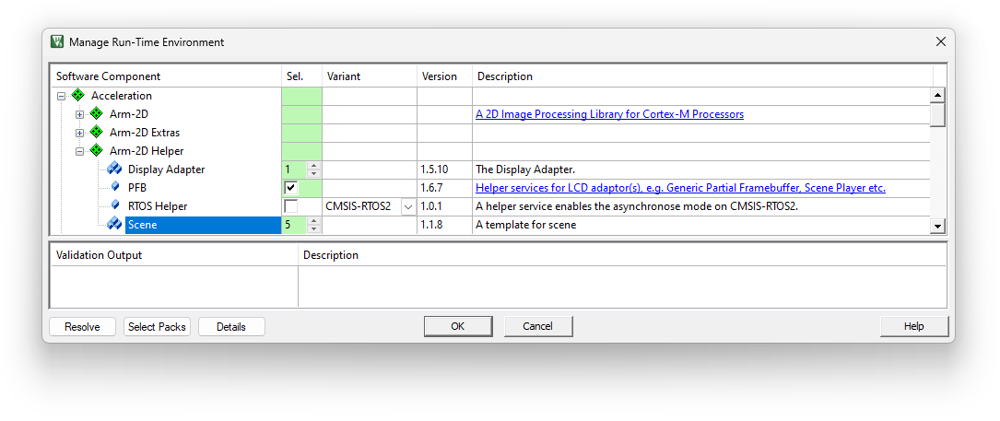
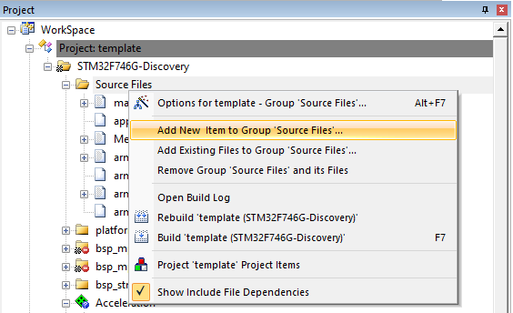
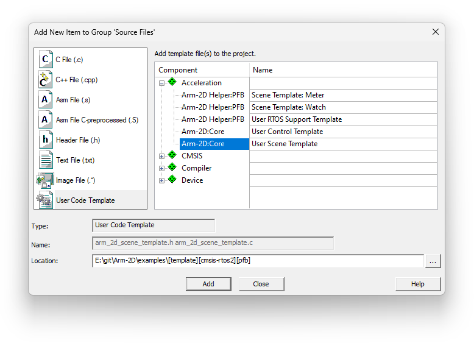

|
Arm-2D
2D Image Processing Library for Cortex-M Processors
|


|
|
Arm-2D
2D Image Processing Library for Cortex-M Processors
|
|
Arm-2D is not a GUI. To be called GUI, it lacks many critical components, such as the element tree, the message processing, a rich set of controls, the support for interactive input devices, and a nice-to-have GUI designer.
If possible, I hope that no one would have to use Arm-2D directly to create GUI applications. However, under the cost pressure, some embedded products must develop GUI applications in resource-constrained environments (e.g. 64K Flash, 12K RAM etc.). Meanwhile, even some devices have relatively richer resources, the application software is often too big to reserve sufficient memory for using a decent GUI stack. Supporting GUI applications in resource constraint environments is a world forgotten by the mainstream embedded GUI stacks.
If the graphics in your application is simple, i.e. consists of panels (for displaying parameters and user settings), and the human-machine interactions are implemented based on a keyboard (or a touch panel without complex touch gestures), then using Arm-2D APIs directly to design GUI applications might be an option. In fact, if you can figure out a way to fulfill the missing parts aforementioned, the GUI application designed with Arm-2D is not only looking good but also has an impressively low memory footprint.
If you happen to meet the conditions above, don't panic; we will try our best to provide you with an easy and efficient development experience. By focusing on the API usage and following the guidance introduced in this article, you can master the Arm-2D application design quickly.
The first step of getting started is learning some basic concepts, among which Tile, Region and Bounding Box model are the most fundamental ones because almost all APIs take Tile(s) and Region(s) as input/output. Please kindly read **README** and **Introduction** for details.
After learning the basic concepts of Arm-2d, please follow the guidance, how_to_deploy_the_arm_2d_library.md, to deploy Arm-2d onto your local hardware platform.
Of course, if you want to skip the porting step and jump to learn how to use the Arm-2D APIs, please try the template projects we prepared for you in the examples directory. These template projects provide porting for STM32 Discovery Board, Cortex-M FVP/VHT, MPS2/MPS3 development platforms and PC (including MacOS, Windows and Linux). In addition, there are other 3rd-party porting available on Github, for example:
After having a working platform, it is good to try Arm-2D APIs with the help of how_to_use_tile_operations.md. During this process, reading how_to_use_layout_assistant.md to learn the basic layout method can make your application development much easier.
At this stage, one might have an outstanding question: where should I use these APIs to practice drawing operations? Please open arm_2d_disp_adapter_0.c and find the function __pfb_draw_handler as shown below - This is our playground.
As you can see, this example code has:
Figure 2-1 The Default Scene of an Display Adapter.

You can replace the code inside __pfb_draw_handler with your own and visually check the result in the default scene hidden by the display adapter. During this process, you can, of course, use the default picture resources coming with Arm-2d, for example, the CMSIS-Logo as shown in Figure 2-2 via corresponding arm_2d_tile_t objects: c_tileCMSISLogoGRAY8, c_tileCMSISLogoRGB565 and c_tileCMSISLogoCCCA8888 defined in cmsis_logo.c. But sooner or later, you would like to use your own pictures. Arm-2D provides a Python script to help you convert images into arm_2d_tile_t objects in C. For more details, please read this guide.
Figure 2-2 The Default Picture resource: CMSIS logo

After finishing the steps above, congratulations, welcome to join the Arm-2D community.
Arm-2D provides example controls in the examples/common directory, which are not only read as reference codes but also available for user applications. To include those example controls, please add the component Acceleration::Arm-2D Extras::Controls in the RTE configuration (as shown in Figure 2-3). Hence all control source codes and related resources will be added to the project.
NOTE: The linker will remove those unused controls or resources.
Figure 2-3 Selecting Controls in RTE
For a real application, you cannot write everything in the default scene coming in the display adapter. You might already notice that the display adapter provides a service called Scene Player, which maintains a FIFO of scenes, allowing us to add new scenes and switch to the next, during which the Scene Player could optionally apply some visual effects like fade-in-fade-out, erasing, sliding etc.
In Arm-2D realm, a GUI application is designed and organized as a series of scenes. When and How to switch to Which scenes are totally under your control. There are two simple ways to add a new scene in MDK:
Using RTE configuration to add a number of new scenes
In RTE configuration, you can update the number of Acceleration::Arm-2D Helper::Scene to add new scenes, as shown below:
Figure 2-4 Adding new scenes in RTE

As all scenes added with this method are included by the header file arm_2d_scenes.h automatically, you can include them in your project like this:
By calling the constructor arm_2d_sceneN_init(), one instance of sceneN is created, initialized and added to the Scene Player FIFO. For example:
NOTE: if we haven't disabled the default scene in the Display Adapter 0, then after adding the scene0 to the FIFO by calling the arm_2d_scene0_init(), it becomes the next available scene in the FIFO, and you have to call arm_2d_scene_player_switch_to_next_scene() to update the FIFO and show it on the screen. If we have disabled the default scene, then after calling the constructor, scene0 is the first available scene in the FIFO and is shown as the current scene on the screen. In this case, you don't have to call arm_2d_scene_player_switch_to_next_scene().
Using Code Template to add new scenes
Except for the method above, you can add a new scene through the code template. For any given group in the project view, please right-click and select "**Add New Item to Group**" in the pop-up menu (as shown in Figure 2-5), then in the dialog find "**User Code Template**", expand the Acceleration and select the Arm-2D:Core::User Scene Template (as shown in Figure 2-6).
Figure 2-5 Adding New Items to a Group

Figure 2-6 Adding a New Scene using Code Template

After clicking the "Add" button, two files , arm_2d_scene_template.h and arm_2d_scene_template.c, will be added to your project folder. Open them in any editor and replace all <NAME> with your scene name (for example, MY_SCENE in upper case) and supersede all <scenen> with the same name in the lower case (for example, my_scene).
NOTE: Because scenes added with the code template are not included in the arm_2d_scenes.h, you must manually include the corresponding header files.
By default, the display adapter switches scenes without any visual effects. You can call the function arm_2d_scene_player_set_switching_mode() to apply some predefined switching visual effects, for example:
In some visual effects, you can specify the period of the switching process by calling the function arm_2d_scene_player_set_switching_period(). For more, please check the header file arm_2d_helper_scene.h.
The design consideration of optimizing performance and memory footprint deserves a dedicated document or maybe more. We can only cover some preliminary tips here:
Please use the feature-specific version rather than a more generic version whenever possible for a given operation. This helps to reduce the memory footprint in general.
For example: for copying an rgb565 tile with a source mask without mirroring, it is better to use the function arm_2d_rgb565_tile_copy_with_src_mask_only() rather than arm_2d_rgb565_tile_copy_with_masks().
To evaluate the 2D performance for a given platform, Arm-2D provides two benchmarks, i.e. Benchmark-Generic and Benchmark-Watchpanel. You can deploy the target benchmark by selecting it in the RTE configuration as shown in Figure 2-7.
Figure 2-7 Selecting Benchmarks in RTE
If your MCU has a small flash, the original benchmark cannot fit into the memory. Arm-2D introduces a so called Tiny mode to solve this problem. You can enable it by either setting the macro __ARM_2D_CFG_BENCHMARK_TINY_MODE__ to 1 in arm_2d_cfg.h or defining the macro in your project configuration.
NOTE: You can find ALL benchmark configurations in arm_2d_cfg.h.
Running benchmark is simple:
arm_2d_benchmark.harm_2d_run_benchmark() after initializing Arm-2D and the display adapter(s).Arm-2D introduces an Asynchronous Mode for hardware accelerators and multi-core systems. To enable this feature, please set the macro __ARM_2D_HAS_ASYNC__ defined in arm_2d_cfg.h to 1.
NOTE: If you have no hardware accelerator, 2D capable DMA (for example, DMAC-350) or dedicated Cortex-M core(s) for 2D graphics, enabling the Asynchronous Mode gains nothing.
When it is good to enable the Asynchronous Mode, you have to have RTOS support also. You can enable the RTOS support in RTE as shown in Figure 2-8. If you cannot find the desired RTOS helper in the drop list, please choose the User Custom and implement the interface functions listed in the source code arm_2d_helper_rtos_user.c.
Figure 2-8 Enable RTOS Support in RTE
NOTE: You do NOT have to enable any RTOS helper in the Synchronous Mode (__ARM_2D_HAS_ASYNC__ is 0 ) even if you are using an RTOS. Even in the Synchronous Mode, by using an RTOS, you can run arm-2d in a dedicated thread and lock the framerate to a desired value. For example:
arm_2d_helium.c in the compilation process, as the C source files are constructed with environment detection in pre-processing phase.arm_2d.h to use the services and APIs in Library.arm_2d_helper.h (which includes arm_2d.h) is sufficient to get ALL the services and APIs ready for you.Please call arm_2d_init() before using any services.
NOTE:
arm_2d_feature.h. For the current stage of the library, please DO NOT override those feature configuration macros.